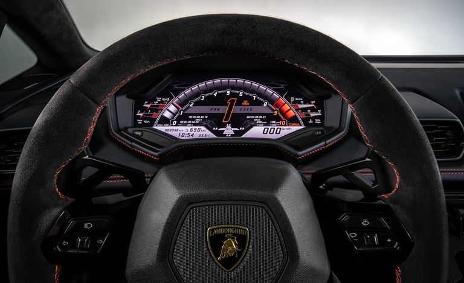
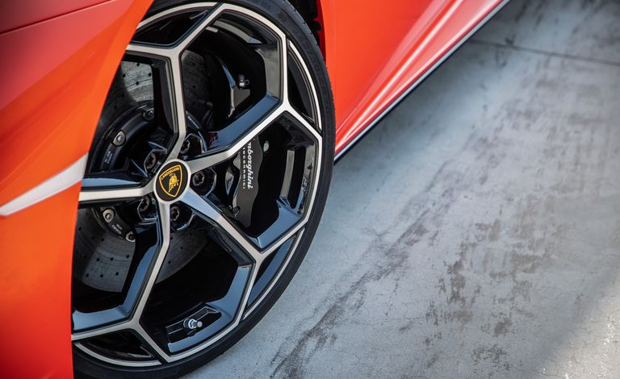

2020 Lamborghini Huracan EVO
- VEHICLE TYPE: mid-engine, all-wheel-drive, 2-passenger, 2-door coupe
- ESTIMATED BASE PRICE: $268,000
- ENGINE TYPE: DOHC 40-valve V-10, aluminum block and heads, port and direct fuel injection
- Displacement318 cu in, 5204 cc
- Power: 631 hp @ 8000 rpm
- Torque: 442 lb-ft @ 6500 rpm
- TRANSMISSION: 7-speed dual-clutch automatic with manual shifting mode
- EPA FUEL ECONOMY (C/D EST): Combined/city/highway: 15/13/18 mpg
Hard-Core Handling, Soft Brake Pedal
The Evo's many adaptive systems all run though the new Lamborghini Dinamica Veicolo Integrata, or LDVI if you can't fake the Italian. LDVI combines the old car's individual processors for the all-wheel-drive system, the adaptive dampers, and the stability control into a single computer that also manages the rear-wheel steering and Lambo's first use of brake-based torque vectoring. While the outgoing Huracán took its orders from a set of reactive algorithms, this new system uses feed-forward logic to predict the driver's intentions and sharpen or soften the car's responses accordingly. Lamborghini tells us that LDVI makes adjustments 50 times per second, juggling an unfathomable number of data channels. The computer considers 240 inputs including pitch, roll, yaw, acceleration in every direction, wheel positions, steering angle, the driver's social-media following, and how long ago the passenger last ate. Okay, we made up those last two, but there's got to be some fat in there, considering the computer spits out an incomprehensible 340 outputs. Even with all those variables in play, we found one consistent result: Driven fast, the Huracán Evo will always feed the driver's ego.
The standard carbon-ceramic brake rotors struggle to keep up when the Evo's estimated 3500 pounds are hustled. Setting the pace for our lead-follow laps, Lamborghini's professional drivers frequently lifted on the Formula 1 circuit's long straights and moved to the left pedal well before they reached the braking markers placed at the track's edge just for our drive. And even that wasn't enough to prevent the pedal from going soft during sessions that were limited to just three laps. In fairness, we were not the first or the last drivers to take the cars on track. The Evos on hand could have been abused to the point that the braking performance was compromised. Fresh fluid, pads, and tires could fix this, so we will wait for a proper C/D test before we pass judgment on the Evo's brakes.
A 10-Cylinder, 631-HP Seismic Event
The Evo's 631-hp V-10 is lifted directly from the Huracán Performante with only slight software and exhaust changes. As in the Performante, every trip to the 8500-rpm redline packs a forceful indictment of its turbocharged rivals. Running almost in step with the Performante, the Evo should notch 60 mph in 2.4 seconds and close the quarter-mile in less than 10.5 seconds. Remind us again why our exotics need forced induction?